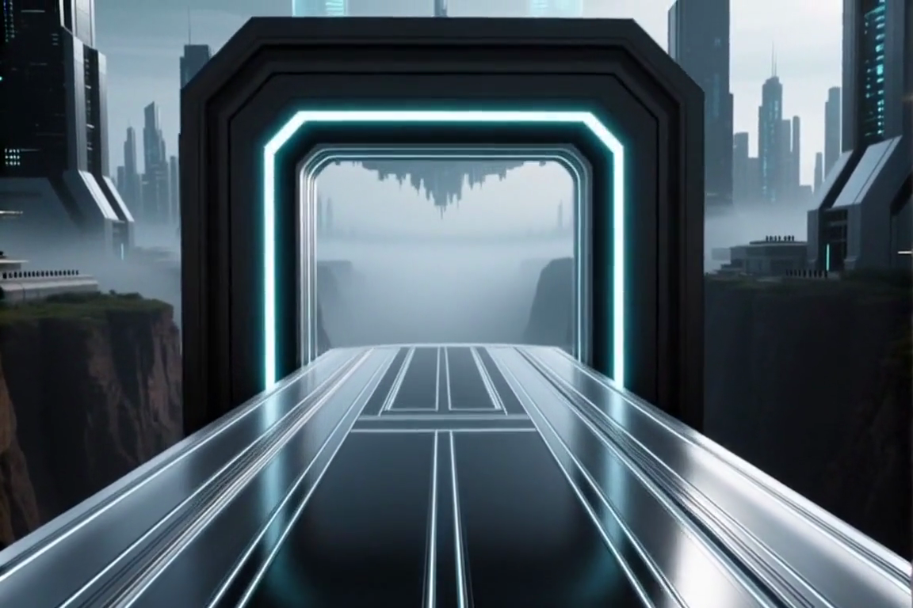
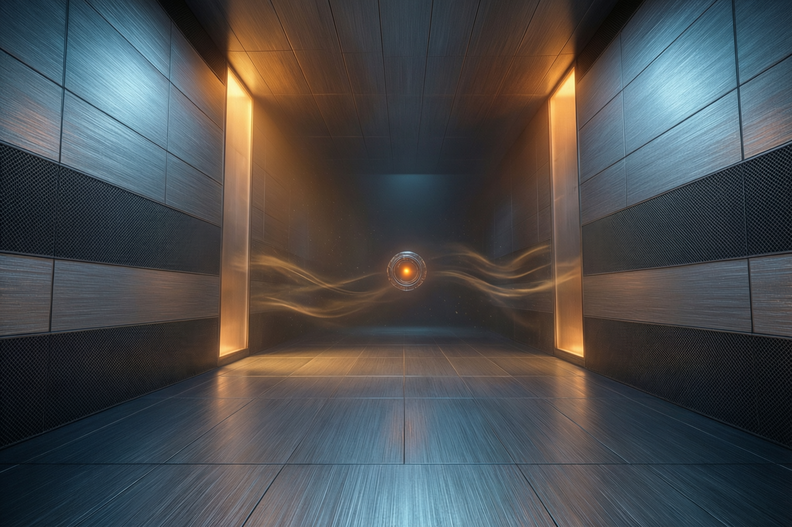
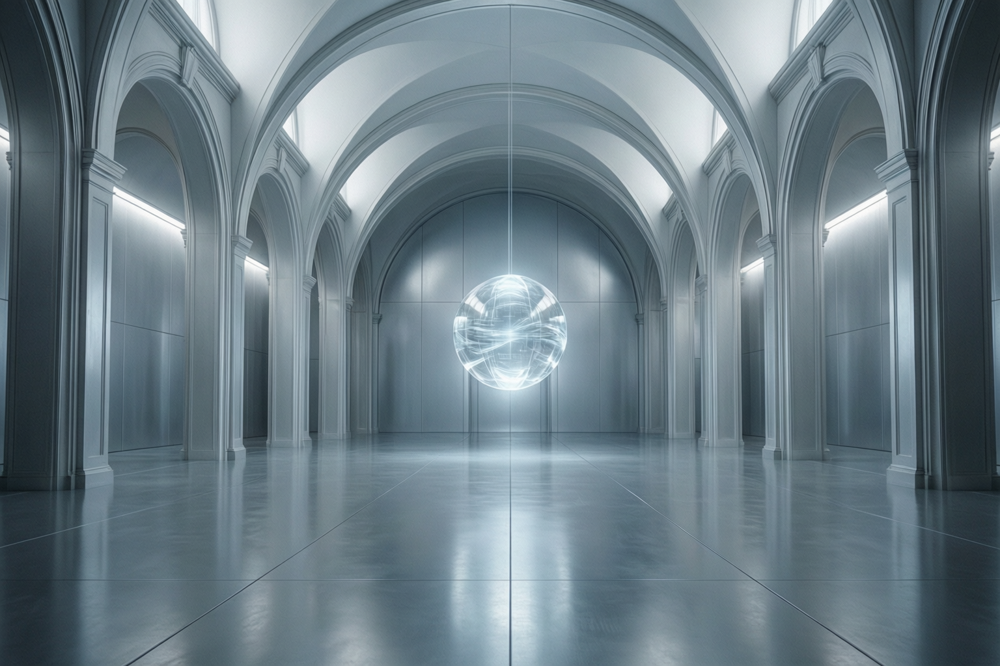
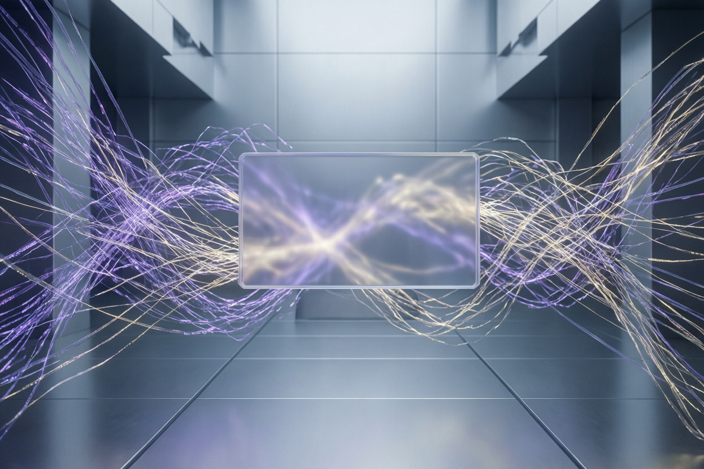
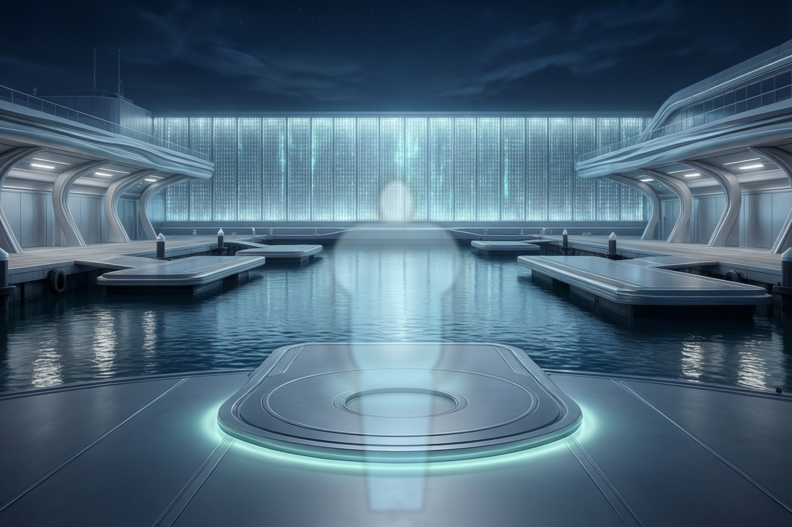
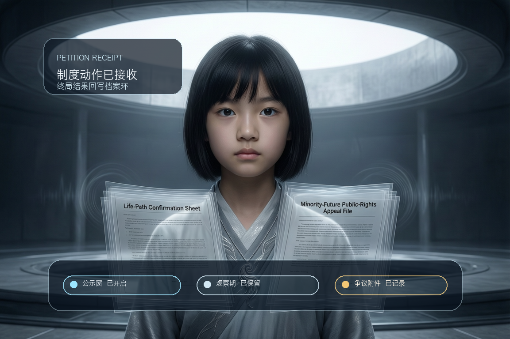

P01 未来湾任务码头
必须讲清 我已经是未来湾固定小队主位，今晚必须去时间档案城处理林澄任务。
当前阻塞 `S02-S04` 还需要更强的身份 onboarding，避免角色都开口了但孩子还不知道谁是谁。
修复重点 继续把队友分工、任务对象、倒计时和“为什么必须现在出发”压实。
这页已经按新的浏览顺序重排：最上面固定放当前最新、最适合首看的整章 `clean current`，优先解决“照片冒充视频”和“整段噪音”问题；下面直接进入 `P01-P12` 分镜资产清单；人物说明、入口规则、矩阵和其他辅助资料统一收到底部。
当前页面规则 顶部这条现在固定显示当前最新的整章 `clean current review cut`，也就是 `story spine current`。它不再机械追求“最长”，而优先保证顶部入口先去掉照片晃动假视频和整段噪音。它会持续保持最新，但当前真实状态仍是 `继续编辑 / PASS WITH NOTES`，不是已定稿。当前还剩 3 个必须继续跟进的问题：
这一屏现在固定只放一个整章视频入口，不再同时摆 `current / reviewcut / 精简版 / 备用版` 让人自己判断。顶部这条就是当前最接近成片的整章版本；目前实际入口已切到 `v23-full`，并且已经吃到这轮 `P01 / S01` 的 `A01+A02` 混合修复。
这张表是当前整集的 story-first 审片总控 以后不再靠对话记忆“哪些地方看不懂”。每一段都先回答 4 个问题：`我在哪里 / 谁在要什么 / 为什么现在必须推进 / 如果失败会失去什么`。只要其中两项还不清楚，这段就不算讲明白。
必须讲清 我已经是未来湾固定小队主位，今晚必须去时间档案城处理林澄任务。
当前阻塞 `S02-S04` 还需要更强的身份 onboarding，避免角色都开口了但孩子还不知道谁是谁。
修复重点 继续把队友分工、任务对象、倒计时和“为什么必须现在出发”压实。
必须讲清 我暂时还没有资格直接介入，只能先过临时观察许可。
当前阻塞 容易被看成漂亮入城镜头，而不是规则和权限门槛。
修复重点 先给限制和倒计时，再给城市场面。
必须讲清 林澄、父亲、07 都早已在制度现场里，而且各自站在不同位置。
当前阻塞 如果空间关系不稳，就会像几个人突然开始说话。
修复重点 先立站位、再立林澄生命感、再让 07 合法反制。
必须讲清 家庭空间让抽象制度第一次刺到人，父亲不是坏人，但他代表最刺人的“为你好”。
当前阻塞 当前 loop 仍是 `FAKE-VIDEO REPLACEMENT REOPENED`。
修复重点 把等待区、安抚屏、签字笔、父亲逻辑和林澄反问串成一条完整后果链。
必须讲清 93% 为什么诱人，为什么大家会觉得系统没错。
当前阻塞 容易只剩 UI 比较和奇观，却没把“人生代价”打出来。
修复重点 让公开路径和第四路径的差别更像真实人生后果，而不是界面切换。
必须讲清 第四路径第一次从猜想变成生命证词。
当前阻塞 当前 loop 仍是 `READABILITY REOPENED`，一暗下来就容易像切到新页面。
修复重点 把暗层入口、波形拼接和第四色解锁做成单线因果。
必须讲清 这条更难的路真的有人活过，所以它值得被保留。
当前阻塞 如果只剩气氛和慢镜头，这段就会失去人性重量。
修复重点 让“停下来理解”成为明确动作，不再只是放慢节奏。
必须讲清 07 不是纸片反派，他是在替一整座城计算制度代价。
当前阻塞 过暗或过抽象都会把 07 的立场削成空话。
修复重点 用更具体的城市代价、资源分配和失败后果压实 07。
必须讲清 真正失手的是真实性，不是秘密答案消失了。
当前阻塞 如果“授权整理 -> 证据冻结”不够直白，就会像随机事故。
修复重点 把“为了抢时间而冒险”的选择后果直接打到前景。
必须讲清 这是公开程序里的高潮第一拍，不是辩论功能页。
当前阻塞 如果只剩界面和对答，会失去“只能公开承担”的压力。
修复重点 让上回响台看起来像被逼出来的唯一选择。
必须讲清 公开表达的后果被压回林澄的人生，要不要签后果成了新的冲突。
当前阻塞 稍不留神就会被看成高潮后的另一个新页面。
修复重点 让 `G01-G02` 成为“说出来 -> 签后果”的情绪桥，而不是重开一段。
必须讲清 数字导师是在世界内接住你，不是在课后上课。
当前阻塞 尾段虽然已摆脱假视频债务，但仍要持续防讲课腔。
修复重点 保持极简、world-in 和问题留白。
使用说明 这里不再只是链接目录，而是把每个 part 的脚本摘要、代表图、完整视频和状态直接展开。`P01` 仍是当前最完整的逐镜示范格式；`P02-P12` 也统一按“脚本摘要 + Beat 内容 + 完整分镜 + 完整视频”的结构持续收口。当前没有任何一段被标成“已定稿”；凡是 `PASS WITH NOTES` 或仍在回修的，都统一写成 `审片中` 或 `继续编辑`。
脚本摘要 你已经站在未来湾任务台前，灰银任务信号亮起，阿潮和固定小队先后进入工作状态，守望者正式把林澄任务交到你手里。
这一段要讲清 你不是误入者；林澄争议今晚就必须处理；接受任务之后，航线和制度压力才真正启动。
Beat 内容
完整分镜
CH01-P01-S01 `POV / 4s`：黑场亮起，先用地点说明明确这里是 `未来湾任务码头`，你已经站在固定小队任务中枢。CH01-P01-S02 `POV / 3-4s`：灰银任务信号点亮，系统层显示“时间档案城灰银级请求接入”，并配系统画外音提示。CH01-P01-S03 `POV+OVR / 4-5s`：阿潮俯冲接入，不再说抽象怪话，而是直接号召固定小队火速集结，赶往时间档案城处理林澄任务。CH01-P01-S04 `POV+OVR / 4-5s`：祁野、闻夏、回响已经在工作；祁野直接提醒先别急着下结论，要先查清系统为什么认定林澄只能走那条 `93%` 的路。CH01-P01-S05 `OVR / 4-5s`：守望者把灰银任务封签推到你面前，正式交班。CH01-P01-S06 `SYS+INT / 可变`：任务封签先展示林澄争议切片，再展开地点、任务性质和失败后果。CH01-P01-S07 `POV→WIDE / 5-6s`：你确认接受任务，权限环和航线被点亮，真正出发。
P01 逐镜资产 下面把 `S01-S07` 每一拍的 keyframe 和对应 clip 直接展开；如果某一拍当前还是历史 provisional alias，也按当前实际装配所用资产如实展示。
CH01-P01-S01 `POV / 4.00s`：未来湾任务台前的到场镜头。
当前处理 `S01` 现已改成 `A01+A02` 混合镜头：先保留原始 `A01` 的任务台前第一人称构图，让孩子一进来就知道自己站在哪里；随后溶接到 `A02` 的真实港区动态底片，把水波和反射运动接回来。
建议上屏字 `未来湾任务码头｜固定小队任务中枢`
当前边界 这次修复已经同步落到 `S01 clip`、`P01 current`、`story spine current` 和 `master current`；现在剩下的开场问题不再是“水不动”或“原图被丢掉”，而是 `S02-S04` 的人物身份 onboarding 还要继续收清。

CH01-P01-S02 `POV / 5.00s`：灰银任务信号脉冲推向视线。
建议画外音 回响（系统层）：“灰银信号点亮。时间档案城发来灰银级请求。”
这一拍要讲清 不是普通通知，而是 `时间档案城` 正在向未来湾发出必须尽快响应的正式接入请求。

CH01-P01-S03 `POV+OVR / 5.01s`：阿潮俯冲接入，把空港变成责任现场。
建议接入台词 阿潮：“未来湾固定小队，火速集结。目的地，时间档案城。处理对象，灰银级人物林澄。”
这一拍要讲清 这句必须让孩子立刻听懂：`谁要出发、去哪里、处理谁`，不能再用莫名其妙的玩笑代替任务信息。
CH01-P01-S04 `POV+OVR / 5.01s`：祁野、闻夏、回响已经在台面上工作。
建议对白 祁野：“先别急着下结论。先查清系统为什么认定，林澄只能走那条 93% 的路。”
这一拍要讲清 祁野不是在讲黑话，也不是让大家别站队；他的意思是 `先别凭感觉判谁对谁错，先查系统证据`。

CH01-P01-S05 `OVR / 5.01s`：守望者把灰银任务封签推到你面前。

CH01-P01-S06 `SYS+INT / 5.01s`：先把林澄是谁、为什么今晚必须争打到面前。
CH01-P01-S07 `POV→WIDE / 5.01s`：权限环确认后，航线点亮，真正出发。

脚本摘要 你沿着点亮的航线逼近时间档案城，但在真正见到林澄之前，必须先通过制度门槛，拿到临时观察许可。
这一段要讲清 这不是漂亮航行镜头，而是“任务时间在流失，而你暂时还没有资格直接介入”的规则压迫。
Beat 内容
完整分镜
CH01-P02-S01 `POV / 4-5s`：沿点亮航线逼近城市，争议等级、观察权限、失败后果短促穿插。CH01-P02-S02 `SYS+POV / 可变`：透明校验层弹开，三条规则依次点亮，要求先拿临时观察许可。CH01-P02-S03 `SYS+FOCUS / 3s`：系统明确允许动作、限制动作与公开质疑剩余窗口。CH01-P02-S04 `WIDE→POV / 4s`：校验通过后，奇观才出现，镜头收向悬浮档案大厅入口。
脚本摘要 大厅空间先建立起来：林澄在中央确认台前，父亲在等待区，序列员 07 站在规则层一侧。之后才让林澄、07 和你之间的冲突逐步成立。
这一段要讲清 这些人不是突然出现的；07 不是反派突袭，而是带着合法制度立场先赢走一小步。
Beat 内容
完整分镜
CH01-P03-S01 `WIDE / 4s`：大厅全景成立，林澄、父亲、07 的站位一次交代清楚。CH01-P03-S02 `POV / 3-4s`：你靠近林澄，她先去接那缕几乎听不见的风，再问“不选择最优，是不是就等于做错”。CH01-P03-S03 `INT / 可变`：档案卡、确认书、家属记录在现场展开，调查动作长在危机空间里。CH01-P03-S04 `OVR / 4s`：07 合法抬出公共推荐条款，拒绝开放底层母样本。CH01-P03-S05 `SYS / 2-3s`：大厅上方直接给出“驳回”和质疑窗口缩短的程序打击。CH01-P03-S06 `POV / 3s`：闻夏压低声音提醒，07 不是赶人，而是在赢时间。CH01-P03-S07 `SYS / 穿插`：礼仪辅助器作为轻趣味与制度润滑层边缘浮出。
脚本摘要 你离开大厅中央，先进入更近、更安静也更刺人的家庭空间，看见签字笔、安抚屏、父亲与林澄同场成立，再按“父亲先、林澄后”完成近景承压。
这一段要讲清 这不是支线过场，而是把抽象制度压力压回一个真实家庭，解释父亲为什么也站在系统那边。
Beat 内容
完整分镜
CH01-P04-S01 `POV / 3s`：等待区静立舱、冷白通道和授权签字笔底座先入画。CH01-P04-S02 `FOCUS / 2-3s`：签字笔反光，安抚屏滚动“更稳定的未来，请放心”。CH01-P04-S03 `POV / 3-4s`：父亲与林澄站在等待区两侧，理论上可选择先走向谁。CH01-P04-S04 `POV / 4-5s`：父亲靠近镜头，说“我不是要替她选完一生，我只是想让她先站稳”。CH01-P04-S05 `POV / 4-5s`：林澄接住现实重量，问“那还算是我的人生吗”。
脚本摘要 三条未来路径同时在时间河道上展开，你开始在路径之间切换、拖拽、比较，第一次直观看到“最优人生”究竟意味着什么。
这一段要讲清 这是本章第一波奇观，但奇观的目标不是炫技，而是让“系统为什么觉得 93% 正确”变得可见。
Beat 内容
完整分镜
CH01-P05-S01 `WIDE / 4s`：三条路径同时在时间河道上展开。CH01-P05-S02 `POV / 可变`：拖拽、点击、比较不同未来片段。CH01-P05-S03 `SYS / 可变`：价值勾选面板把系统偏好的标准显形。CH01-P05-S04 `FOCUS / 2-3s`：荒诞微未来小窗制造轻松感和记忆点。CH01-P05-S05 `POV / 3s`：林澄抬头，说这段风声不属于公开长廊。
脚本摘要 你追着风声进入暗层接口，画面明显转暗，银蓝色风丝般的生命证词第一次出现，第四路径开始从“猜想”变成“存在过的痕迹”。
这一段要讲清 `P06` 负责发现，不负责立刻把 07 推进来接管；如果这里太早变追捕，后面的呼吸和人性重量会断掉。
Beat 内容
完整分镜
CH01-P06-S01 `POV / 4s`：追着风声进入暗层，画面骤暗。CH01-P06-S02 `FOCUS / 3s`：银蓝色风丝像幽灵一样逃窜。CH01-P06-S03 `INT / 可变`：跟随并拼接风声轨迹，形成轻解谜。CH01-P06-S04 `OVR / 4-5s`：风声婆婆旧录音先于完整形象接通，“别只听最大声的那条”。CH01-P06-S05 `POV→SYS / 4s`：第四路径解锁，第四色与“风暴听译者”正式点亮。
脚本摘要 你进入光感变暖、速度变慢的沉默练习室，旧录音贝壳、手写日志和风名标签依次出现，把第四路径从“隐藏信息”推进成“有人真实活过的未来”。
这一段要讲清 这里的作用不是补气氛，而是让你和林澄第一次真正停下来理解：为什么这条更难的路值得被保留。
Beat 内容
完整分镜
CH01-P07-S01 `POV / 4s`：你走进光感变暖的练习室。CH01-P07-S02 `FOCUS / 短切若干`：旧录音贝壳、手写日志、风名标签依次特写。CH01-P07-S03 `POV / 可变`：风声婆婆说“你听不见，也可能是因为你前面太吵了”。CH01-P07-S04 `INT / 可变`：点击不同风名标签，让孩子真正停留，不再只追任务。
脚本摘要 白色法庭般的规则投影室展开，序列员 07 正面陈列资源模型、失败率模型和开放路径成本评估，让制度立场也获得它自己的重量。
这一段要讲清 `P07` 让第四路径有了人性重量，`P08` 则让 07 的坚持有了制度重量，回响台高潮才不会变成单向正确答案。
Beat 内容
完整分镜
CH01-P08-S01 `WIDE / 3s`：白色法庭般的规则投影室展开。CH01-P08-S02 `POV / 可变`：资源模型、失败率模型、开放路径成本评估围绕你铺开。CH01-P08-S03 `POV / 4s`：07 说“你们看到的是一个孩子的愿望，我看到的是一整座城的分配”。CH01-P08-S04 `INT / 可变`：立场回应区展开，玩家开始组织回应。
脚本摘要 第四路径证据整理面板展开，你必须在“授权回响加速整理”和“保留原始链路”之间作选择；随后证据冻结，团队开始真正分裂。
这一段要讲清 这里疼的不是“秘密答案没了”，而是我们刚理解了一条重要却难证明的路，却在最需要承担真实性的时候失手了。
Beat 内容
完整分镜
CH01-P09-S01 `SYS+INT / 可变`：中央弹出是否授权回响加速整理。CH01-P09-S02 `SYS / 3s`：如果授权，原始链路与辅助推断快速汇拢，制造“赶上了”的错觉。CH01-P09-S03 `OVR / 4s`：07 抬手冻结部分证据线，质疑推断被包装成事实。CH01-P09-S04 `SYS / 3s`：系统明确落下“未来湾临时质疑权限：部分冻结”。CH01-P09-S05 `POV / 可变`：祁野、闻夏、林澄三人的态度一起压进镜头，团队分裂成立。
脚本摘要 当私人理解、暗层发现和证据链都不足以直接改变结果时，队伍只能把问题推进到公开程序里，在全城可见的回响台上承担表达责任。
这一段要讲清 这不是“辩论功能页”，而是高潮第一拍：你被逼到只能公开承担，不能再把问题藏在队伍内部。
Beat 内容
完整分镜
CH01-P10-S01 `WIDE / 4s`：整座城脚下展开，回响台像唯一剩下的公共程序空间。CH01-P10-S02 `POV / 可变`：证据区与立场区左右展开，但带着冻结缺口。CH01-P10-S03 `POV / 可变`：07 的文明辩手公共投影接入。CH01-P10-S04 `SYS / 2s`：系统明确“公开回应程序开始”。CH01-P10-S05 `POV / 可变`：对手先发难，你从残存证据里组织回应。CH01-P10-S06 `INT / 可变`：辩论后整理最终公开陈词。CH01-P10-S07 `SYS+INT / 可变`：少数未来临时开放程序通过后，责任签署确认层滑出。
脚本摘要 最终确认书出现在你和林澄之间，制度动作被依次点亮；林澄正视镜头，逼你确认自己是不是真的听见了她。
这一段要讲清 这是高潮第二拍：公开表达的结果被压回林澄的具体人生，问题从“说出来”推进到“要不要签后果”。
Beat 内容
完整分镜
CH01-P11-S01 `FOCUS / 4s`：最终确认书和三种制度动作被点亮。CH01-P11-S02 `POV / 3s`：林澄正视你，确认你是否真的听见了她。CH01-P11-S03 `POV→OVR / 5s`：林澄说，她不要未来先把她删掉。CH01-P11-S04 `SYS / 3s`：制度动作被提交，系统写入“高不确定性未来保留提案”。CH01-P11-S05 `WIDE / 4s`：城市上空一条灰暗丝线点亮第四色。CH01-P11-S06 `POV / 4s`：回到未来湾，主档案墙写入“裂口档案 01：时间档案城”。CH01-P11-S07 `SYS+WIDE / 4s`：港口上空出现跨层异常波纹，守望者低声说“温柔托管”。
脚本摘要 你停在未来湾回航口，数字导师以世界内柔和投影接住你，用极简总结完成离场，留下一个继续生长的问题，而不是把你拉回课堂。
这一段要讲清 这一段承担的是情绪接住、命题抽出和 world-in 收束，不是课后老师总结。
Beat 内容
完整分镜
CH01-P12-S01 `POV→OVR / 18-24s`：数字导师以世界内柔和投影接住你，内部再分三拍完成“接住情绪 / 抽出命题 / 留下问题”。
这不是“几个未来角色吵一架”的故事，而是一个非常具体的倒计时任务：在午夜归档前的最后几小时，未来湾固定小队接到正式灰银任务，要赶去时间档案城，判断 `12 岁女孩林澄` 是否真的应该签下那份《最优人生路径确认书》。
核心不是“要不要反抗系统”，而是：如果一个系统能高精度预测你最容易成功的人生，你还有没有权利去争取那条更难、但更像你自己的未来。
如果你刚才听到祁野的话还是觉得绕，问题不在你，而在当前开场还需要继续把人物功能讲得更直白。这页现在先把这句翻译成人话：
`祁野的意思是：别先用情绪判断“林澄一定对 / 系统一定错”，先查系统为什么认定她只能走那条 93% 的路。`
1. 先读上面的“先认人”
先把角色身份和这一集的任务搞清楚，再进视频，不然开头几句对白会天然像黑话。
2. 不要第一次就点 `master current`
这条还是内部审片入口，不是新用户入口。它现在仍有身份交代不足、粗剪感和局部噪音问题。
3. 先看 `P03` 和 `P04`
`P03` 能最快看懂“林澄是谁、07 是谁、为什么要争”；`P04` 能看懂“父亲为什么也站在系统那边”。
4. 最后再回头看整章粗剪
等你知道人物关系以后，再看 `master` 或 `story spine`，才是在审节奏，而不是在猜人物身份。
这条 `current master` 现在不能再被写成“默认先看”。它仍然只是 chapter-01 的统一审片入口，适合内部团队快速看节奏，不适合第一次接触这集的人。你刚才指出的“身份看不懂、对白像黑话、画面像照片晃动、后面有噪音”这些问题，确实还会在这里暴露出来。
主角阵列 已收束为玩家主位、林澄、祁野、闻夏、回响、档案守望者、阿潮，以及制度对手序列员 07。
当前稳定母图 为 `S-01 / S-02 / S-04 / S-06 / S-07 / S-09 / S-11`，足以支撑 chapter-01 的开场、制度压力、家庭等待区冲突、概率长廊奇观、公共表达与回航收束。
P01 已更新到 `v20`，把 `S01` 升成 `A01+A02` 混合开场：既保留原始任务台前 POV，又接回真实水波和港口反射运动。P03 已升级到 `v4`，把 `C02` 从 zoompan fallback 换成真实青云 close-up 并回写 current。P06 已升级到 `v5` 并完成根因级音轨收口。P07 已升级到 `v2` 并完成 opening readability lift。P12 已升级到 `v4` 并把尾段假视频 hold 收成明确的导师离场卡片。chapter master current 现为 `v19-current`，而 story spine current 已切到 `v23-full`，但它们现在都只承担粗剪审片和问题暴露入口，不再写成“新用户默认顺看片”。
当前视频主线 这一页不再保留多条整章观看口径。对外只保留顶部这一条最接近成片的整章视频；`P07/P08/P09 current` 这类 part-level 交付只在下面分镜列表中保留，用来逐段审资产，不再和整章入口并排竞争。
补桥结果 当前 story spine current 已推进到 `v23-full`。这一版继续保留整章口径，并且已经同步吃到 `P01 v20` 的 `S01` 混合修复，不再在“保留原图”与“保留真实水动”之间二选一。
当前结论 这一轮的真实进展主要发生在“资产债务修复”，不是“新用户已经能一口气看懂整集”。当前最大的正向变化是：`story spine current v23-full` 已经同步吃到 `P01 v20` 的 `S01 A01+A02` 混合修复、`P03 v4` 的真实青云 close-up、`P06 v5` 的暗层音轨收口、`P06 -> P07` consequence bridge、`P07 v2` 的 opening readability lift，以及 `P12 v4` 的导师离场卡片。但用户第一次进入这页时，仍然会被“身份没立住、对白先跑、粗剪噪音和残余假视频感”卡住，所以入口解释现在必须先于整章视频。
2026-04-02 结构结论 这一集的资产链和结构线已经大致成立，但“第一次观看是否看得懂”还没有达标。要让 10-12 岁孩子更稳地跟上，必须把 5 件事锁死：前 10 分钟必须明白“我是谁 / 林澄是谁 / 今晚会失去什么 / 为什么只能现在争”；整集只保留 `5` 个高压互动锚点；高潮按 `P10 公开冲突 + P11 后果落地` 双拍理解；第一集辩论默认固定为 `human_vs_agent`；玩家在回响台上是未来湾小队的公共发言主位和最后签署人。
2026-04-02 已核实待办 当前最需要先修的不是再扩新资产，而是先把入口和真实状态收口，再继续清理 viewer-blocking 问题与镜头债务。下面这份列表按今天的真实进度同步更新，不再混写“已说过”和“已真的修完”。
当前高风险 现在最大的未收口问题不只是一条技术 lane，而是三件会直接卡住观感的 viewer-blocking 问题：开头人物身份和任务目标不清、整章粗剪里仍有残余假视频感、后段噪音与粗剪音轨还会把人直接踢出故事。`P04` waiting-zone 的人物同步、入口 continuity 与声画一致性仍是最明确的 active technical lane。
为什么你会觉得“像没改” 因为这页之前主要修的是资产链，不是新用户理解链。真实发生的修正包括 `P03/C02` 换成真 clip、`P01` 去掉前段 faux-video、`P06` 收掉坏音轨、`P12` 去掉尾段假视频 hold；但如果页面还让人先点整章粗剪，而不是先把身份、任务和冲突讲清，你感受到的仍然会是“人物莫名其妙、对白听不懂、后面还有噪音”。
2026-04-01 编辑结论 `P10 -> P11` 的双拍现在已经通过 `F04` 尾部收短 + `P11` consequence bridge + `G01` 收短被真正接顺。当前它已不再主要像“切到一个新页面”，而更像“公开承担刚发生，后果立刻压回林澄的人生”。
当前硬判断 只有真正依赖 `单张图推拉 / 呼吸动效 / zoompan / clean plate 轻动 / voice-led hold` 撑时长的段落，才算本轮必须继续清的假视频债务。`UI-first` 如果本来承担的是制度信息组织，不自动等同于“照片冒充视频”。截至当前 accepted current，这类主债务已先清空。
当前整章正式审片入口为 `chapter-01-vertical-slice-master-v19-current.mp4`。这条 master 直接读取 current 目录下的 accepted parts，已经同时对齐最新的 `P01 delivery v20`、`P03 delivery v4`、`P06 delivery v5`、`P10 delivery v4`、`P11 delivery v3`，以及已改成导师离场卡片收束的 `P12 delivery v4`。它的职责是作为 chapter-01 的统一 spine 入口，方便连续审整条 vertical slice，而不是替代各 part 的独立制作判断，也不应被误读成“完整单集故事已经讲顺、而且已经完成全部精修”的最终封版。
`P07-P09` 当前仍没有被假装写回 accepted master，但它们已经不再只是 bridge。新的 `story spine v14` 直接把 `P07`、`P08`、`P09` 的正式 part-level delivery 插回整章，同时也继续吃到这轮 `P03 v4` 的真实青云近景替换、`P01 v17` 的显式 intro cards、`P10 v4 / P11 v3` 的高潮双拍修正、`P06 -> P07` consequence bridge、`P07 v2` 的 opening readability lift，以及 `P12 v4` 的导师离场卡片收束。更关键的是，这版已经把 `P06` 的根因级音轨收口吃回正式 current，但它仍然只是“把问题暴露得更完整”的粗剪预览，不再被写成默认顺看片入口；`review cut` 只保留为备用对照。
导演室复核 当前最新版已经推进到 `v14`。这版不再只靠三处结构桥与少量真实入口位，而是把 `P07` 的生活痕迹、旧见证与停听，`P08` 的制度模型与 `07` 立场，`P09` 的冻结质疑与团队分裂都完整接回 chapter，同时继续把 `P06` 的噪音段从官方 spine 中收掉，把 `P12` 的尾声假视频 hold 改成明确的导师离场卡片，把 `P01` 的前两拍改写成显式 intro cards，并把 `P03/C02` 从假近景替换成真实青云 close-up。因此导演层现在更准确的判断不是“孩子已经能顺着看完”，而是“整章因果链已经比上一版完整很多，但第一次看仍会被开头身份交代不足和后段粗剪问题卡住”。它仍不是 accepted master，而是当前更完整的 story-first 审片入口。
当前稳定交付入口 下面这张矩阵只列 `current` 指针实际指向的文件，不混入 probe、failed gate 或历史对照文件；时长已按本地现行文件重新复核。
| 交付 | 当前文件 | 时长 | 规格 | 当前判断 |
|---|---|---|---|---|
| chapter-01 master | chapter-01-master-current.mp4 | 157.50s | 1152x768 / 30fps / AAC stereo | PASS WITH NOTES |
| P01 | part-01-current.mp4 | 28.00s | 1152x768 / 30fps / AAC stereo | PASS WITH NOTES |
| P02 | part-02-current.mp4 | 22.40s | 1152x768 / 30fps / AAC stereo | PASS WITH NOTES |
| P03 | part-03-current.mp4 | 16.40s | 1152x768 / 30fps / AAC stereo | PASS WITH NOTES |
| P04 | part-04-current.mp4 | 13.77s | 1152x768 / 30fps / AAC stereo | PASS WITH NOTES |
| P05 | part-05-current.mp4 | 9.13s | 1152x768 / 30fps / AAC stereo | PASS WITH NOTES |
| P06 | part-06-current.mp4 | 14.17s | 1152x768 / 30fps / AAC stereo | PASS WITH NOTES |
| P07 | part-07-current.mp4 | 13.17s | 1152x768 / 30fps / AAC stereo | PASS WITH NOTES |
| P08 | part-08-current.mp4 | 16.68s | 1152x768 / 30fps / AAC stereo | PASS WITH NOTES |
| P09 | part-09-current.mp4 | 17.64s | 1152x768 / 30fps / AAC stereo | PASS WITH NOTES |
| P10 | part-10-current.mp4 | 15.40s | 1152x768 / 30fps / AAC stereo | PASS WITH NOTES |
| P11 | part-11-current.mp4 | 15.53s | 1152x768 / 30fps / AAC stereo | PASS WITH NOTES |
| P12 | part-12-current.mp4 | 23.61s | 1152x768 / 30fps / AAC stereo | PASS WITH NOTES |
统一预览页 当前稳定预览入口与本页保持同址，后续审片和内部同步优先直接使用 chapter-01-main-character-dossier.html，不再手动翻 dated 文件名。页面里凡是 `current/...` 路径，默认都视为当前稳定锚点；少量保留的直链只用于历史对照、paper cut 基线或开场档案资产。需要整章连续审片时，可以从这里进入 chapter-01 master current，但它仍是内部审片入口，不是第一次看这集的入口。
当前 accepted part 已统一挂到 current 目录：
当前最有代表性的 clip 已同步到 current 指针，方便直接审最新镜头级资产。
补桥预览直链 当前新增两个专用入口，用来直接比较“现在这条 vertical slice”与“补回中段因果承重以后”的差异：
当前主交付文件为 `part-01-future-bay-task-dock-delivery-v20.mp4`。这一版仍然沿用 `v10` 建立起来的 canonical `CH01-P01-S01-S07` 同步对白路线，不回退到后贴 TTS；但和 `v19` 不同的是，它把 `S01` 升成 `A01+A02` 混合开场，先保留原始任务台前 POV，再把真实水波和港口反射运动接回来，同时继续保留“未来湾任务码头”的地点说明条。`S02` 继续保留为显式 grey-silver request card，再尽快交给阿潮的真实入场动作。当前主目标仍然是：既把故事讲清，也让真实镜头和真实声音一起成立。
当前主装配文件已升级为 `part-02-emergency-entry-check-delivery-v2.mp4`。这条交付对应规范段 `P02`；脚本与视频模板仍沿用兼容别名 `B01-B04`。和旧版不同的是，`CH01-P02-S01 / B01` 的入港航线逼近以及 `CH01-P02-S04 / B04` 的入厅桥接，现在都已经由真实 `qingyun / viduq3-turbo` 短 clip 接回主装配，不再只是为未来正式视频预留插槽。`CH01-P02-S02/S03` 仍保持 `UI-first`，因为这两镜本来承担的就是准入信息与制度限制可读性，而不是人物表演或大动作镜头。
当前主交付文件为 `part-03-archive-hall-pressure-delivery-v4.mp4`。这条成片对应规范段 `P03`，先把“大厅压迫感、林澄被卡住、制度时间正在收紧”讲清楚，同时把旧版最弱的 `C02` 从 zoompan fallback 换成真实的青云近景，把 `C04` 也收回同场 real pressure clip。当前装配仍遵守 `identity-first` workflow：`C01` 继续沿用已 accepted 的三角关系锚点，`C02` 则直接提升系统里已验证过的 `Qingyun / viduq3 / start-end2video` 真 clip，避免再假装“还没找到可用资产”。


当前主交付文件为 `part-04-waiting-zone-and-father-delivery-v1.mp4`。这条成片对应规范段 `P04`，严格按 `5` 镜合同推进：先让等待区阈值和签字笔/安抚屏的温柔压迫成立，再把父亲与林澄锁进同一空间，最后才进入 `父亲先 -> 林澄后` 的两条同步短线。当前口径不再回退到旧的 `4` 镜压缩版本。围绕人物一致性的新一轮修复里，`S05` 也已经补出一条 `identity-lock v2` 真实 probe，用来验证等待区里的林澄近景同样可以走 `start-end2video + canonical portrait` 的稳定路线。


当前 `P05` 已经从“讲清故事、跑通流程”的 rough 口径，推进到 `D02` 也有真实动态承载体的 `delivery v2`。现阶段仍保留 `D01` 的三路径建立与 `D04` 的异常风声桥接为 story-first 主线，但 `D02` 已不再只是同空间 UI 分层，而是先有真实路径比较 clip，再叠回轻交互层保证可读性。


`P06` 现在已经升级到当前可审的 `delivery v4`。这一版不再是用静帧和 rescue 顶住结构，而是把 `进入暗层 -> 拼接异常波形 -> 第四路径显形 -> 旧录音进入` 四个职责都真正落回到真实动态 clip 上，再把 backlog 收缩成节奏、声场和上下游连续性的 polish。


当前进展 这一轮已经不再停在首帧层，而是把 `P07-P09` 的正式 shot contract 推进成了完整的中段三连：`P07` 已形成独立静室段，`P08` 已形成独立制度段，`P09` 现在也已形成独立后果段。当前 `E05/E06/E07/E08/E09/E11/E13/E15/E17` 都已经落成真实 clip，`E14/E16` 则先按制度 UI-first 收口进 `P09 delivery`，不再继续留在 preview bridge 里承担主叙事。
`P10` 当前已经收成了新的 `delivery v4`。这条交付继续严格遵守 `story-first`：先让回响台公共空间亮起，再把证据与立场组织和公开陈词提交都保留在世界内 UI 层中，但它们下面现在不再是静态底图，而是新的 `qingyun / viduq3-turbo` same-space carrier。同时，这一版还把 `F04` 的提交后 lingering 收短，让高潮第一拍不再停成“一个表单已经填完”的页面感。


`P11` 当前已经升级到 `delivery v3`。这一版继续严格按 `G01 -> G02 -> G03 -> G04` 收束终局，但它不再直接从 `F04` 切进确认层，而是在开头补进了一条极短的 consequence bridge，并把 `G01` 本体收短。这样终局现在更像“后果压回林澄的人生”，而不是“系统结果页开始了”。围绕人物一致性问题，这里仍保留一条不抢主线的 `identity-lock v2` 路线：`G02` 已经补出 `start-end2video + canonical portrait` 的真实 probe，用来验证“首尾帧锁人”比“单首帧硬顶 + 事后换脸”更适合作为默认生产口径。


`P12` 当前不再沿用旧版 `4` 镜总结段，而是压成单镜 `G05` world-in 收束。重点不是“再讲一段课”，而是让孩子在回航口被接住，然后带着一个问题离开。
`P12` 当前已升级为“clean retry 弱投影 opening clip + 明确 world-in mentor question card”。它仍然坚持不追可见导师正脸，但尾声已经不再靠同场景轻动 hold 来假装视频，而是把离场问题收成了明确设计过的卡片形态。

一句话概括 玩家作为未来湾见习建造者主位，带队进入时间档案城，判断 `12 岁的林澄` 是否要在午夜归档前签下那份 `93% 最优人生路径确认书`。
核心身份 祁野查证据，闻夏抢公开窗口，回响只辅助不代替判断，序列员 07 代表制度立场，父亲代表“为你好”的现实压力。
固定顺序 顶部永远只显示最新组装版；中段按 `P01-P12` workflow 顺序展示分镜资产；其他解释、规则、日志和入口统一放在这里，不再打断看片顺序。
P08/P09 本轮 contact-strip 复审已完成。当前判断是：它们主要属于 `UI-first` 信息组织位，而不是同类暗部失败，因此不再继续挂在 active technical fix 上，也不再和“照片加滤镜冒充视频”混算。
P04 等待区与父亲段仍维持 `5` 镜 current 口径，但它和 `P01 -> P05` 的连续性、父亲与林澄两条同步短线、以及等待区声场仍保留定向升级窗口。这里不再回退到旧 `4` 镜压缩版，只做 identity-first 的定向修复。
P10 / P11 / P12 这三段现在都已退出 active lane：`P10 -> P11` 的高潮双拍已通过 `F04` 收短和 `consequence bridge` 收顺，`P12` 也已进一步换到 `clean retry opening + mentor question card`。它们后续只保留定向 notes，不再抢占当前假视频替换主线。
P02 当前已完成 `B01/B04` 真实 clip 替换，并收成 `delivery v2`。这段不再属于假视频债务最高优先队列，后续只保留入口压迫感与桥接力度 notes。
P06 当前已完成 `E01-E04` 全部真实短 clip 替换，并收成 `delivery v5`。这段不再属于假视频债务最高优先队列，后续只保留节奏和连续性 polish。
P05 当前已完成 `D02` 真实 clip 替换，并收成 `delivery v2`。这段已经不再属于 chapter-01 的主要假视频债务队列，后续只保留局部奇观感与时长 notes。
P03 2026-04-02 升级 v4：已把系统里原本存在的历史 `Qingyun / viduq3 / start-end2video` `S02` 真 clip 正式提升进 current，连同 `S01` 大厅建立与更干净的 `S04` same-space pressure clip 一起收成新的 `delivery v4`。`S03/S05` 继续保留为显式 UI overlay（设计选择，非假视频）。
硬规则 `单张照片推拉 / scene still 呼吸动效 / clean plate + 轻 motion / 主要靠离屏声音撑住的静态 hold`，都不再被视为 chapter-01 的正式视频完成态。
默认判断 不浪费已有真实 clip，但复用必须服从故事与连续性，不再为了省 token 把不该留的旧镜头硬塞进成片。
最高视觉门之一 林澄、祁野、闻夏、序列员 07、守望者等识别核心人物，默认必须继续沿用 `canonical portrait + actor refs + scene-state keyframe`。
儿童可跟上 每一处 shot-to-shot、part-to-part 过渡，都必须能回答“上一拍改变了什么，为什么下一拍会出现在这里”。
不要动不动整段重开 高潮、转折、回航如果已经基本讲通，后续先找缺失的 `consequence bridge / reaction bridge / handoff bridge`。
最终优先级 chapter-01 的目标不是把零散成功资产并排展示，而是形成一条孩子能顺着看下去的完整故事视频。
身份：未来湾见习建造者第一人称主位。
作用：把分散信息、人和立场组织成判断，并承担团队最后的走向。
身份：chapter-01 之后与未来湾长期连接的常驻伙伴起点。
作用：让“制度问题”落进具体人生冲突。
身份：未来湾设备棚常驻少年成员。
作用：拆规则、查输入、建证据链，保证团队不过度依赖情绪判断。
身份：未来湾公共舞台的少年组织者。
作用：把复杂问题翻译成别人能理解、能加入、能共同承担的公共表达。
身份：未来湾高阶记录者与任务发放者。
作用：打开任务入口，维持文明视角，不代替孩子下判断。
阿潮：未来湾公共航行器与转场角色。
回响：常驻 AI 协作伙伴，负责整理与协作，不越权。
序列员 07：制度逻辑代表，承担稳定、精准且持续施压的对手功能。


这组首帧与对应视频是当前 `P01` 开场资产的历史源头。展示口径统一按规范编号解释；旧文件名 `A01-A03` 仅保留为兼容历史装配链的资产别名。`A01` 与 `A02` 现在都已经重新参与 `S01` 当前混合开场，所以本节既是历史对照，也是当前 `S01` 的素材来源说明。

这是 `P01 v10` 当前的关键中段资产。它们的职责不是介绍角色，而是让孩子先看懂“未来湾固定小队已经在运转，而我就在这支队伍的责任中心”。当前正式使用路线已升级为 `真实镜头 + 同步人声`：`S03` 由阿潮短播报接入，`S04` 由祁野在工作中发出唯一一句短线。
这一组资产对应 `P01` 的守望者正式交付职责。当前 `P01 v10` 继续复用已经可用的 `Wan 2.6` 同步声画版本，让守望者作为当前段落里唯一稳定的成人交班镜头。
`P01 v13` 继续保留“先让林澄本人出现，再叠争议责任信息”的路线，但这一镜已经切换到新的同步音视频 clip。当前做法是：林澄在镜头里说一句更短、更稳的关键句，确保口型、语气和镜头尾部都能自然落地；右侧继续叠受控 dispute overlay，用来压住模型自发的文件文字并补齐责任后果。


这一组资产对应 `P01` 的接受任务后启航段。`P01 v10` 当前已改用新的 world-audio clip：镜头重新回到真实启航视频，但不再接受随机字幕、伪英文或尾段音乐。阿潮可见试用首帧仍保留为探索资产，不进入主交付。

{kind=link}
{kind=link}
{kind=link}
{kind=link}
{kind=link}
{kind=link}